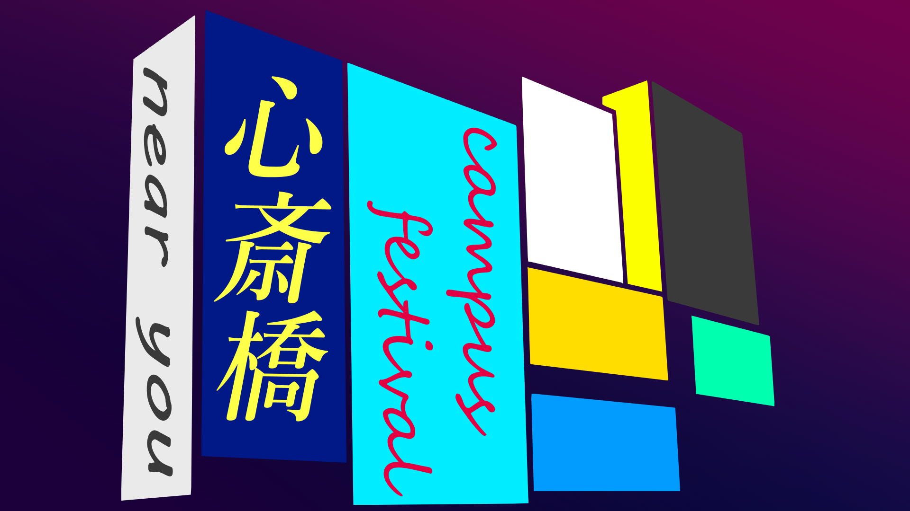

心斎橋キャンパスコンセプト
オンラインでも、あなたの近くに。
PDFはこちら！
作成者: どめいち さん
作成者: さいとうちゃん さん
作成者: さめちゃん さん
作成者: 側溝の苔 さん
作成者: 吉村裕弥 さん
作成者: 山崎一生 さん
作成者: ターニャ さん
作成者: ターニャ さん
作成者: ターニャ さん
作成者: トメィトウ さん
作成者: トメィトウ さん
作成者: トメィトウ さん
作成者: くらげ さん
作成者: くらげ さん
Tinkercadで作った太鼓の達人の筐体です。- どめいち さん
愛犬のポンタの写真をフォトショで加工、デザインして、世界に一つだけのオリジナルTシャツを作りました。- さいとうちゃん さん
今まで自分が撮った写真をまとめたものです。- さめちゃん さん
人類の敗北- 側溝の苔 さん
https://nichcopyter.herokuapp.com/ インターネット掲示板で発生した面白いやりとりを、ユーザーが共有するSNS。- 吉村裕弥 さん
プログラミングの時間にHTMLで作った自分の自己紹介ページです。個人情報などは隠してますが初めてにしてはうまくできたかと思います！- 山崎一生 さん
ただ自分が褐色のキャラが好きだったので描いた作品です。- ターニャ さん
暗い感じの中に明るい色をとイメージして描いてみたイラストです。- ターニャ さん
友達のアイコン用に描いたイラストです、案外これが1番いい感じに描けたと思えるイラストです。- ターニャ さん
ぴえん- トメィトウ さん
魔剤自販機- トメィトウ さん
あれだよあれ、Fall Guysのあれ- トメイトウ さん
Nという文字をモチーフにしたロゴです。- くらげ さん
アイコン用に作ったものです。- くらげ さん